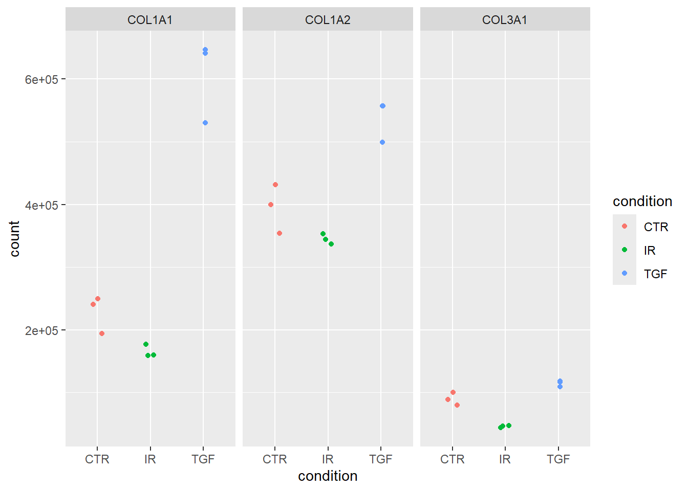
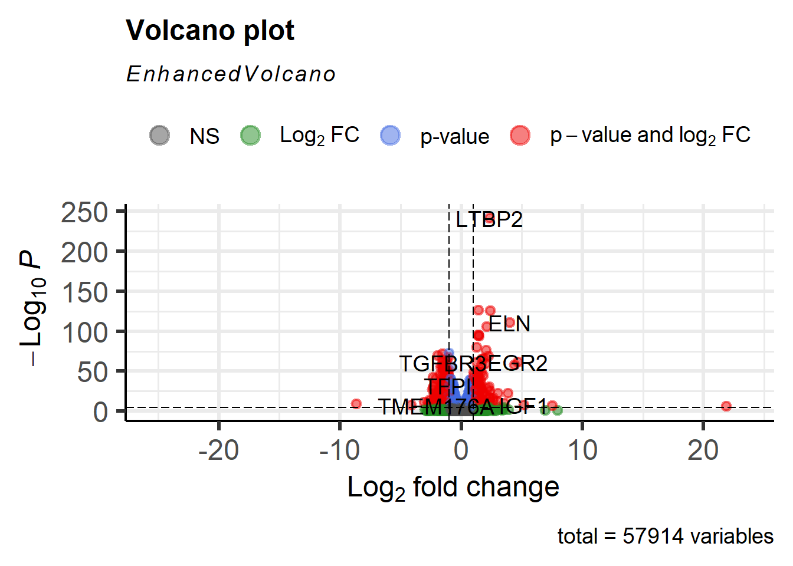

source("https://raw.githubusercontent.com/markdunning/markdunning.github.com/refs/heads/master/files/training/bulk_rnaseq/install_bioc_packages.R")Introduction to RNA-Seq - Part 2
Overview
Performing differential expression on Bulk RNA-seq data using DESeq2
Quick Start
This section follows on from Part 1 where we saw how to import raw RNA-seq counts into DESeq2 and perform some quality assessment. Several packages are required, which can be downloaded with this code:-
The following will also assume you have created a DESeq2 object in a folder called Robjects in your working directory. This can be downloaded with the following.
dir.create("Robjects/",showWarnings = FALSE)
download.file("https://github.com/markdunning/markdunning.github.com/raw/refs/heads/master/files/training/bulk_rnaseq/dds.rds",destfile = "Robjects/dds.rds")Differential expression with DESeq2
Now that we are happy that the data quality looks good, we can proceed to test for differentially expressed genes. There are a number of packages to analyse RNA-Seq data. Most people use DESeq2, edgeR or limma. We will use DESeq2 for the rest of this practical.
Recap of pre-processing
The previous section walked-through the pre-processing and transformation of the count data. Here, for completeness, we list the minimal steps required to process the data prior to differential expression analysis.
Note that although we spent some time looking at the quality of our data , these steps are not strictly necessary prior to performing differential expression so are not shown here for the sake of brevity. Remember, DESeq2 requires raw counts so the vst transformation is not shown as part of this basic protocol.
library(DESeq2)
count_file <- "raw_counts/raw_counts_matrix.tsv"
counts <- read.delim(count_file)
## Step needed for this data to tidy the column names
colnames(counts)[-1] <- stringr::str_remove_all(colnames(counts)[-1], "X")
sampleinfo_corrected <- read.delim("meta_data/sampleInfo_corrected.txt")
dds <- DESeqDataSetFromMatrix(counts,
colData = sampleinfo_corrected,
design = ~condition, tidy=TRUE)
saveRDS(dds, file="Robjects/dds.rds")We will be using these raw counts throughout the workshop and transforming them using methods in the DESeq2 package. If you want to know about alternative methods for count normalisation they are covered on this page.
The DESeq workflow in brief
We have previously defined the condition as our factor of interest using the design argument when we created the object. This can be checked using the design function. The current design can be queried using the design function.
design(dds)~conditionIt can be changed at any point before we run the differential expression workflow, can refer to any of the variables saved in the colData of the dds object, or even a combination of different variables.
colData(dds)DataFrame with 9 rows and 5 columns
Run condition Name Replicate Treated
<character> <factor> <character> <integer> <character>
1_CTR_BC_2 1_CTR_BC_2 CTR CTR_1 1 N
2_TGF_BC_4 2_TGF_BC_4 TGF TGF_1 1 Y
3_IR_BC_5 3_IR_BC_5 IR IR_1 1 Y
4_CTR_BC_6 4_CTR_BC_6 CTR CTR_2 2 N
5_TGF_BC_7 5_TGF_BC_7 TGF TGF_2 2 Y
6_IR_BC_12 6_IR_BC_12 IR IR_2 2 Y
7_CTR_BC_13 7_CTR_BC_13 CTR CTR_3 3 N
8_TGF_BC_14 8_TGF_BC_14 TGF TGF_3 3 Y
9_IR_BC_15 9_IR_BC_15 IR IR_3 3 YThe counts that we have obtained via sequencing are subject to random sources of variation. The purpose of differential expression is to determine if potential sources of biological variation (e.g. counts observed from different sample groups) are greater than random noise.
The DESeq function is the main workflow for differential expression and runs a couple of processing steps automatically to adjust for different library size and gene-wise variability. You can you can read about these in the DESeq2 vignette and run some example code at the end of this session.
de_condition <- DESeq(dds)estimating size factorsestimating dispersionsgene-wise dispersion estimatesmean-dispersion relationshipfinal dispersion estimatesfitting model and testingde_conditionclass: DESeqDataSet
dim: 57914 9
metadata(1): version
assays(4): counts mu H cooks
rownames(57914): ENSG00000000003 ENSG00000000005 ... ENSG00000284747
ENSG00000284748
rowData names(26): baseMean baseVar ... deviance maxCooks
colnames(9): 1_CTR_BC_2 2_TGF_BC_4 ... 8_TGF_BC_14 9_IR_BC_15
colData names(6): Run condition ... Treated sizeFactorThe results of the analysis are not immediately accessible, but can be obtained using the results function.
results(de_condition)log2 fold change (MLE): condition TGF vs CTR
Wald test p-value: condition TGF vs CTR
DataFrame with 57914 rows and 6 columns
baseMean log2FoldChange lfcSE stat pvalue
<numeric> <numeric> <numeric> <numeric> <numeric>
ENSG00000000003 1430.562846 -0.2562067 0.0813936 -3.1477521 0.00164531
ENSG00000000005 0.113566 -0.0883933 4.0804559 -0.0216626 0.98271709
ENSG00000000419 1790.537536 -0.1449058 0.1008195 -1.4372794 0.15063862
ENSG00000000457 640.692302 -0.3106360 0.1137555 -2.7307347 0.00631933
ENSG00000000460 206.179026 0.1600274 0.1567963 1.0206074 0.30744046
... ... ... ... ... ...
ENSG00000284744 8.307038 -0.209531 0.800702 -0.261684 0.793565
ENSG00000284745 0.000000 NA NA NA NA
ENSG00000284746 0.101097 -1.050150 4.080456 -0.257361 0.796900
ENSG00000284747 28.783710 -0.297530 0.448931 -0.662751 0.507490
ENSG00000284748 0.548323 0.873372 4.080456 0.214038 0.830517
padj
<numeric>
ENSG00000000003 0.00906995
ENSG00000000005 NA
ENSG00000000419 0.30807839
ENSG00000000457 0.02685529
ENSG00000000460 0.50350287
... ...
ENSG00000284744 NA
ENSG00000284745 NA
ENSG00000284746 NA
ENSG00000284747 0.689074
ENSG00000284748 NAEach row is a particular gene measured in the study (i.e. all genes in the organism being studied) and each column reports some aspect of the differential expression analysis for that gene. The values that I typically pay most attention to are highlighted in bold.
| Column Name | Description | Importance |
|---|---|---|
| baseMean | The average of normalized count values (size-factor corrected) across all samples in the comparison. | Measures the average expression magnitude of the gene and useful for basic filtering |
| log2FoldChange | The estimated log base 2 fold change between the two groups being contrasted (e.g., Treatment / Control). | The primary measure of the effect size or magnitude of the difference. |
| lfcSE | The standard error estimate for the \(\text{log}_2\text{FoldChange}\). | Measures the precision of the \(\text{log}_2\text{FC}\) estimate. Smaller values indicate higher reliability. |
| stat | The Wald test statistic (calculated as \(\text{log}_2\text{FC} / \text{lfcSE}\)) | The statistical value used to test the null hypothesis (that the \(\text{log}_2\text{FC}\) is zero) |
| pvalue | The \(p\)-value derived from the Wald test statistic. | The unadjusted probability of observing the effect by chance. Do not use this for filtering. |
| padj | The Benjamini-Hochberg adjusted \(p\)-value (False Discovery Rate, FDR).CRITICAL for significance. This corrects for multiple testing | CRITICAL for statistical significance. This corrects for multiple testing. Genes are considered differentially expressed if this value is below your threshold (e.g., 0.05). |
Note that all genes are reported. At this stage the gene identifiers are not very informative, something we will fix shortly. Furthermore, the results function displays results in a format which is not compatible with standard data manipulation tools (i.e. tidyverse), so we will have to convert.
Processing the DE results using tidyverse
The output can be converted into a data frame and manipulated in the usual manner if we add the tidy = TRUE argument to results. It is recommended to use dplyr to manipulate the data frames with the standard set of operations detailed on the dplyr cheatsheet
selectto pick which columns to displayfilterto restrict the rowsmutateto add new variables to the data framearrangeto order the data frame according to values of a column or columns
A tidy framework for RNA-seq
There is actually a dedicated workflow for those familiar with “tidy” methodologies and wish to apply the same philosophy to RNA-seq and other ’omics data. I plan to cover this at a later point.
Neither the tidybulk or approach I present here is necessarily better than the other, and should in fact yield exactly the same results.
library(dplyr)
results(de_condition, tidy=TRUE) %>%
slice_head(n=10) row baseMean log2FoldChange lfcSE stat
1 ENSG00000000003 1430.5628457 -0.25620674 0.08139356 -3.1477521
2 ENSG00000000005 0.1135661 -0.08839330 4.08045587 -0.0216626
3 ENSG00000000419 1790.5375358 -0.14490579 0.10081950 -1.4372794
4 ENSG00000000457 640.6923020 -0.31063596 0.11375545 -2.7307347
5 ENSG00000000460 206.1790264 0.16002744 0.15679627 1.0206074
6 ENSG00000000938 7.4126750 -1.94966011 0.94841767 -2.0556978
7 ENSG00000000971 5318.4200170 -0.37348479 0.06859390 -5.4448693
8 ENSG00000001036 3629.7262081 -0.42700955 0.05618654 -7.5998545
9 ENSG00000001084 923.1202025 -0.19549932 0.09925106 -1.9697455
10 ENSG00000001167 1261.1547094 0.08263564 0.09065646 0.9115251
pvalue padj
1 1.645312e-03 9.069945e-03
2 9.827171e-01 NA
3 1.506386e-01 3.080784e-01
4 6.319333e-03 2.685529e-02
5 3.074405e-01 5.035029e-01
6 3.981166e-02 NA
7 5.184345e-08 9.308987e-07
8 2.964639e-14 1.176542e-12
9 4.886755e-02 1.346109e-01
10 3.620188e-01 5.605916e-01
Note
Although, the “tidy” output is more useful for downstream analysis, I personally like the output generated by the results function without tidy=TRUE as it displays the contrast being tested (in this case TGF vs CTR). This is a good way of checking that you are comparing the groups that you expect.
We can sort the rows by adjusted p-value and then print the first 10 rows. I’m using slice_head function as a dplyr equivalent to the base head.
results(de_condition,tidy=TRUE) %>%
arrange(padj) %>%
slice_head(n=10) row baseMean log2FoldChange lfcSE stat pvalue
1 ENSG00000119681 6471.7058 2.372065 0.07076496 33.52033 2.437260e-246
2 ENSG00000120708 22001.6982 1.436637 0.05904590 24.33084 9.248277e-131
3 ENSG00000172061 1481.6147 2.384971 0.09843523 24.22883 1.105455e-129
4 ENSG00000049540 932.0366 3.999465 0.17556867 22.78006 7.228861e-115
5 ENSG00000060718 1512.0092 2.123432 0.09532775 22.27506 6.448803e-110
6 ENSG00000115414 683348.5240 1.453310 0.06867840 21.16109 2.181368e-99
7 ENSG00000187498 30609.2525 1.458950 0.06926943 21.06196 1.776880e-98
8 ENSG00000186340 14380.2024 1.468632 0.06999698 20.98136 9.707600e-98
9 ENSG00000087245 51862.2917 1.282562 0.06613894 19.39194 9.026914e-84
10 ENSG00000139211 2302.3470 2.070441 0.10902113 18.99119 2.017183e-80
padj
1 4.371957e-242
2 8.294780e-127
3 6.609883e-126
4 3.241783e-111
5 2.313573e-106
6 6.521564e-96
7 4.553383e-95
8 2.176687e-94
9 1.799164e-80
10 3.618422e-77Or we can sort the rows and then write the resulting data frame to a file.
File naming
You can name the csv as anything - although something like results.csv is probably not particularly helpful for all but the simplest datasets. Personally, I like to choose file names that are informative about the contents even if they do look a bit complicated.
dir.create("de_analysis",showWarnings = FALSE)
results(de_condition,tidy=TRUE) %>%
arrange(padj) %>%
readr::write_csv("de_analysis/condition_TGF_vs_CTR_DESeq_all.csv")Filtering to the differentially-expressed genes can be achieved using the filter function from dplyr with some cut-off on the adjusted p-value.
results(de_condition,tidy=TRUE) %>%
filter(padj < 0.05) %>%
readr::write_csv("de_analysis/condition_TGF_vs_CTR_DESeq_sig.csv")It is also a good idea to save the DESeq output object itself so we can re-use later.
saveRDS(de_condition, file="Robjects/de_condition.rds")We can discover how many differentially-expressed genes (at a particular p-value cut-off) using the count function. I am making sure that I explicitly use the count function from dplyr using the technique of putting dplyr:: before count.
results(de_condition,tidy=TRUE) %>%
dplyr::count(padj < 0.05) padj < 0.05 n
1 FALSE 13039
2 TRUE 4899
3 NA 39976
Note
You may notice the amount of NA p-values here. We will come back to this later, but it is related to some filtering that DESeq2 is doing as default.
Another overview of the results is to use the plotMA function. Each point on this plot represents and individual gene with the x- and y-axes being the overall expression level and magnitude of difference respectively. Statistically significant genes are automatically highlighted. The fanning effect at low expression levels is often seen due to high relative fold-change at low expression levels. Once you have run your DE analysis, an MA plot visually confirms that your DE genes are not exclusively confined to extremely low-count regions.
plotMA(de_condition)
It is also instructive to perform a “sanity” check and plot the sample-level counts for genes with high significance. This could highlight any other technical factors that we are not currently taking into account. The plot is not particularly attractive, but is a good quick diagnostic as it confirms which direction your contrast is. i.e. Treatment vs Control or Control vs Treatment.
## Get the gene lowest p-value and a log2 fold-change over 0
top_up <- results(de_condition, tidy = TRUE) %>%
filter(log2FoldChange > 0) %>%
slice_min(padj) %>%
pull(row)
plotCounts(dds,top_up,intgroup = "condition")## Get the gene with the lowest p-value and a log2 fold-change less than 0
top_down <- results(de_condition, tidy = TRUE) %>%
filter(log2FoldChange < 0) %>%
slice_min(padj) %>%
pull(row)
plotCounts(dds,top_down,intgroup = "condition")
Note
If your study involves knocking-out a particular gene, or you have some positive controls that are known in advance, it would be a good idea to visualise their expression level with plotCounts.
Changing the direction of the contrast, or the groups being compared
You hopefully noticed that the sign of the log fold changes have been calculated using the CTR group as a baseline. In other words, a positive log2FoldChange means that a gene has higher expression in TGF compared to CTR. This is usually the direction that makes sense for biological interpretation. However, DESeq2 has not done anything clever here. The order of the contrasts is dictated by the “levels” of the variable used in the design.
dds$condition[1] CTR TGF IR CTR TGF IR CTR TGF IR
Levels: CTR IR TGFSince CTR is the first thing printed here it gets chosen as the baseline. It is just a fortunate coincidence that CTR is first alphabetically! In order that we are not relying on the defaults and for transparency, I tend to explicitly state which contrast I want to make using the contrast argument and have full control over what the baseline is. In the contrast argument you create a vector (using c) followed by the levels in the order you want to compare with the baseline coming last.
In the below this can be read as TGF vs CTR, which is in fact the default
## This should give the same as the table above
results(de_condition, contrast=c("condition","TGF","CTR"))log2 fold change (MLE): condition TGF vs CTR
Wald test p-value: condition TGF vs CTR
DataFrame with 57914 rows and 6 columns
baseMean log2FoldChange lfcSE stat pvalue
<numeric> <numeric> <numeric> <numeric> <numeric>
ENSG00000000003 1430.562846 -0.256207 0.0813936 -3.14775 0.00164531
ENSG00000000005 0.113566 0.000000 4.0804559 0.00000 1.00000000
ENSG00000000419 1790.537536 -0.144906 0.1008195 -1.43728 0.15063862
ENSG00000000457 640.692302 -0.310636 0.1137555 -2.73073 0.00631933
ENSG00000000460 206.179026 0.160027 0.1567963 1.02061 0.30744046
... ... ... ... ... ...
ENSG00000284744 8.307038 -0.209531 0.800702 -0.261684 0.793565
ENSG00000284745 0.000000 NA NA NA NA
ENSG00000284746 0.101097 -1.050150 4.080456 -0.257361 0.796900
ENSG00000284747 28.783710 -0.297530 0.448931 -0.662751 0.507490
ENSG00000284748 0.548323 0.873372 4.080456 0.214038 0.830517
padj
<numeric>
ENSG00000000003 0.00906995
ENSG00000000005 NA
ENSG00000000419 0.30807839
ENSG00000000457 0.02685529
ENSG00000000460 0.50350287
... ...
ENSG00000284744 NA
ENSG00000284745 NA
ENSG00000284746 NA
ENSG00000284747 0.689074
ENSG00000284748 NAIF we wanted to change the order we can do:-
## Changing the direction of the contrast
results(de_condition, contrast=c("condition","CTR","TGF"))
Use the DESeq function once and once only!
You might be wondering why, if I am comparing CTR to TGF samples, do I have the IR samples in my dataset? I have seen people doing an analysis like this on just the CTR and TGF samples, and create another DESeqDataset object to compare CTR to IR. Unfortunately, this is not the recommended best practice.
When you call DESeq(dds), the function performs several crucial steps:
- Size Factor Estimation: It calculates the normalization factors based on all samples simultaneously.
- Dispersion Estimation: Crucially, it estimates the gene-wise and final dispersion (variance) parameters across all samples.
By using all samples together, the model gets a much more robust and accurate estimate of the gene-specific variance. This is especially important for groups with small sample sizes (e.g., \(n=3\) or \(n=4\)).
Pooling information across the entire experiment makes the statistical test for any individual comparison more powerful and reliable. Furthermore, Running DESeq() takes time, as it involves fitting thousands of generalized linear models and optimizing dispersion estimates. If you were to subset your data and run DESeq() separately for every comparison (e.g., once for TGF vs CTR, then again for IR vs CTR), you would be wasting computational time and diminishing the statistical power of the analysis.
You should perform the full differential expression analysis by calling DESeq(dds) only once on your combined dataset. Then, you use the results() function multiple times to extract the specific pairwise comparisons or complex contrasts you are interested in.
Exercise
- Re-run the analysis to find differentially-expressed genes between the
IRtreated samples andCTR - Write a csv file that contains results for the genes that have an adjusted p-value less than 0.05 and a log2 fold change more than 1, or less than -1 in the contrast of TGF vs CTRL.
- Use the
plotCountsfunction to visually-inspect the most statistically-significant gene identified
Note
## Like to run the `results` function without `tidy=TRUE` to check everything is working
results(de_condition, contrast = c("condition", "IR", "CTR"))log2 fold change (MLE): condition IR vs CTR
Wald test p-value: condition IR vs CTR
DataFrame with 57914 rows and 6 columns
baseMean log2FoldChange lfcSE stat pvalue
<numeric> <numeric> <numeric> <numeric> <numeric>
ENSG00000000003 1430.562846 -0.136193 0.0817196 -1.666593 9.55953e-02
ENSG00000000005 0.113566 1.143864 4.0804559 0.280328 7.79226e-01
ENSG00000000419 1790.537536 0.241934 0.1006649 2.403361 1.62451e-02
ENSG00000000457 640.692302 -0.128599 0.1140639 -1.127428 2.59561e-01
ENSG00000000460 206.179026 -0.850453 0.1675739 -5.075092 3.87308e-07
... ... ... ... ... ...
ENSG00000284744 8.307038 0.843943 0.772014 1.093171 0.274319
ENSG00000284745 0.000000 NA NA NA NA
ENSG00000284746 0.101097 -0.779681 4.080456 -0.191077 0.848465
ENSG00000284747 28.783710 -0.391963 0.456290 -0.859021 0.390329
ENSG00000284748 0.548323 2.942851 3.977407 0.739892 0.459366
padj
<numeric>
ENSG00000000003 2.18208e-01
ENSG00000000005 NA
ENSG00000000419 5.32619e-02
ENSG00000000457 4.47487e-01
ENSG00000000460 3.99611e-06
... ...
ENSG00000284744 NA
ENSG00000284745 NA
ENSG00000284746 NA
ENSG00000284747 0.586086
ENSG00000284748 NAresults(de_condition, contrast = c("condition", "IR", "CTR"), tidy = TRUE) %>%
arrange(padj) %>%
filter(padj < 0.05, abs(log2FoldChange) > 1) %>%
readr::write_csv("de_analysis/condition_IR_vs_CTR_sig_genes.csv")More complex designs
The examples we have used so far have performed a differential expression analysis using a named column in the colData object. The DESeq2 package is capable of performing more complex analyses that can take multiple factors into consideration at the same time; so-called “multi-factor designs”
The use of such a design could be motivated by discovering sources of technical variation in our data that might obscure the biological differences we would like to compare. e.g.

In the example image above the main source of variation is the batch in which the samples were sequenced. A multi-factor analysis to compare the various conditions, but “correct” for differences in batch, would be as follows.
### Don't run this. It's just a code example
design(MY_DATA) <- ~ batch + conditionLikewise, if we have different treatments applied to difference cell-lines, but the main source of variation is the cell line the following could be used.
### Don't run this. It's just a code example
design(MY_DATA) <- ~cell_line + treatmentAdding annotation to the DESeq2 results
We would love to share these results with our collaborators, or search for our favourite gene in the results. However, the results are not very useful in there current form as each row is named according to an Ensembl identifier. Whilst gene symbols are problematic and can change over time, they are the names that are most recognisable and make the results easier to navigate.
There are a number of ways to add annotation, but we will demonstrate how to do this using the org.Hs.eg.db package. This package is one of several organism-level packages in Bioconductor that are re-built every 6 months. These packages are listed on the annotation section of the Bioconductor, and are installed in the same way as regular Bioconductor packages. An alternative approach is to use biomaRt, an interface to the BioMart resource. BioMart is much more comprehensive, but the organism packages do not require online access once downloaded.
### Only execute when you need to install the package
install.packages("BiocManager")
BiocManager::install("org.Hs.eg.db")
# For Mouse
BiocManager::install("org.Mm.eg.db")The packages are larger in size that Bioconductor software packages, but essentially they are databases that can be used to make offline queries. An alternatve (biomaRt) that connects to the ensembl biomart resource will be discussed later.
library(org.Hs.eg.db)First we need to decide what information we want. In order to see what we can extract we can run the columns function on the annotation database.
columns(org.Hs.eg.db) [1] "ACCNUM" "ALIAS" "ENSEMBL" "ENSEMBLPROT" "ENSEMBLTRANS"
[6] "ENTREZID" "ENZYME" "EVIDENCE" "EVIDENCEALL" "GENENAME"
[11] "GENETYPE" "GO" "GOALL" "IPI" "MAP"
[16] "OMIM" "ONTOLOGY" "ONTOLOGYALL" "PATH" "PFAM"
[21] "PMID" "PROSITE" "REFSEQ" "SYMBOL" "UCSCKG"
[26] "UNIPROT" We are going to filter the database by a key or set of keys in order to extract the information we want. Valid names for the key can be retrieved with the keytypes function.
keytypes(org.Hs.eg.db) [1] "ACCNUM" "ALIAS" "ENSEMBL" "ENSEMBLPROT" "ENSEMBLTRANS"
[6] "ENTREZID" "ENZYME" "EVIDENCE" "EVIDENCEALL" "GENENAME"
[11] "GENETYPE" "GO" "GOALL" "IPI" "MAP"
[16] "OMIM" "ONTOLOGY" "ONTOLOGYALL" "PATH" "PFAM"
[21] "PMID" "PROSITE" "REFSEQ" "SYMBOL" "UCSCKG"
[26] "UNIPROT" We should see ENSEMBL, which is the type of key we are going to use in this case. If we are unsure what values are acceptable for the key, we can check what keys are valid with keys
keys(org.Hs.eg.db, keytype="ENSEMBL")[1:10] [1] "ENSG00000121410" "ENSG00000175899" "ENSG00000291190" "ENSG00000171428"
[5] "ENSG00000156006" "ENSG00000196136" "ENSG00000114771" "ENSG00000127837"
[9] "ENSG00000129673" "ENSG00000090861"For the top gene in our analysis the call to the function would be:-
select(org.Hs.eg.db, keys=top_up,
keytype = "ENSEMBL",columns=c("SYMBOL","GENENAME")
)Unfortunately, the authors of dplyr and AnnotationDbi have both decided to use the name select in their packages. To avoid confusion and errors, the following code is sometimes used:-
AnnotationDbi::select(org.Hs.eg.db, keys=top_up,keytype = "ENSEMBL",columns=c("SYMBOL","GENENAME"))'select()' returned 1:1 mapping between keys and columns ENSEMBL SYMBOL
1 ENSG00000119681 LTBP2
GENENAME
1 latent transforming growth factor beta binding protein 2To annotate our results, we definitely want gene symbols and perhaps the full gene name. Let’s build up our annotation information into a new data frame using the select function.
anno <- AnnotationDbi::select(org.Hs.eg.db,keys=rownames(dds),
columns=c("SYMBOL","GENENAME"),
keytype="ENSEMBL")'select()' returned 1:many mapping between keys and columns# Have a look at the annotation
head(anno) ENSEMBL SYMBOL
1 ENSG00000000003 TSPAN6
2 ENSG00000000005 TNMD
3 ENSG00000000419 DPM1
4 ENSG00000000457 SCYL3
5 ENSG00000000460 FIRRM
6 ENSG00000000938 FGR
GENENAME
1 tetraspanin 6
2 tenomodulin
3 dolichyl-phosphate mannosyltransferase subunit 1, catalytic
4 SCY1 like pseudokinase 3
5 FIGNL1 interacting regulator of recombination and mitosis
6 FGR proto-oncogene, Src family tyrosine kinaseHowever, we have a problem that the resulting data frame has more rows than our results table. This is due to the one-to-many relationships that often occur when mapping between various identifiers.
dim(anno)[1] 58969 3dim(dds)[1] 57914 9Such duplicated entries can be identified using the duplicated function. Fortunately, there are not too many so hopefully we won’t lose too much information if we discard the entries that are duplicated. The first occurrence of the duplicated ID will still be included in the table.
anno <- AnnotationDbi::select(org.Hs.eg.db,keys=rownames(dds),
columns=c("ENSEMBL","SYMBOL","GENENAME","ENTREZID"),
keytype="ENSEMBL") %>%
filter(!duplicated(ENSEMBL))'select()' returned 1:many mapping between keys and columnsdim(anno)[1] 57914 4We can bind in the annotation information to the results data frame.
results_annotated <- results(de_condition,tidy=TRUE) %>%
left_join(anno, by=c("row"="ENSEMBL"))
head(results_annotated) row baseMean log2FoldChange lfcSE stat pvalue
1 ENSG00000000003 1430.5628457 -0.2562067 0.08139356 -3.1477521 0.001645312
2 ENSG00000000005 0.1135661 -0.0883933 4.08045587 -0.0216626 0.982717094
3 ENSG00000000419 1790.5375358 -0.1449058 0.10081950 -1.4372794 0.150638620
4 ENSG00000000457 640.6923020 -0.3106360 0.11375545 -2.7307347 0.006319333
5 ENSG00000000460 206.1790264 0.1600274 0.15679627 1.0206074 0.307440460
6 ENSG00000000938 7.4126750 -1.9496601 0.94841767 -2.0556978 0.039811655
padj SYMBOL
1 0.009069945 TSPAN6
2 NA TNMD
3 0.308078390 DPM1
4 0.026855292 SCYL3
5 0.503502873 FIRRM
6 NA FGR
GENENAME ENTREZID
1 tetraspanin 6 7105
2 tenomodulin 64102
3 dolichyl-phosphate mannosyltransferase subunit 1, catalytic 8813
4 SCY1 like pseudokinase 3 57147
5 FIGNL1 interacting regulator of recombination and mitosis 55732
6 FGR proto-oncogene, Src family tyrosine kinase 2268We can save the results table using the write.csv function, which writes the results out to a csv file that you can open in excel.
write.csv(results_annotated,file="de_analysis/condition_TGF_vs_CTR_DESeq_annotated.csv",row.names=FALSE)Exercise
- The publication gives examples of
COL1A1,COL1A2andCOL3A1as genes that are up-regulated in TGF-treated samples vs controls (Figure 6C). Use your data to verify this by- extracting their p-values
- plotting the counts for these genes
Solution
We already have the differential expression statistics for the contrast TGF vs CTR and have just added gene names (SYMBOL) into the results_annotated. We can therefore filter our results to rows that match any of these genes of interest.
genes_of_interest <- c("COL1A1", "COL1A2", "COL3A1")
## To make the output a bit cleaner I will select a few columns of interest.
filter(results_annotated, SYMBOL %in% genes_of_interest) %>%
dplyr::select(log2FoldChange, padj, SYMBOL) log2FoldChange padj SYMBOL
1 1.4077294 4.902831e-44 COL1A1
2 0.4442566 6.458329e-08 COL1A2
3 0.3552021 9.398496e-05 COL3A1Indeed they all are significant with a positive fold-change indicating higher expression in TGF-treated samples. Plotting the counts for genes requires a bit more thought, as the following does not work as we might hope
plotCounts(dds, "COL1A1", intgroup = "condition")`Error in counts(dds, normalized = normalized, replaced = replaced)[gene, : subscript out of bounds`
The error is not particularly helpful, but it basically means that it cannot find counts for COL1A1 in the dds object. Although we have added gene names to the analysis, they only appear in our results table and the gene counts are still referred to by ensembl IDS.
ens_ids <- filter(results_annotated, SYMBOL %in% genes_of_interest) %>%
pull(row)
ens_ids[1] "ENSG00000108821" "ENSG00000164692" "ENSG00000168542"This code works, but is a bit clunky. N.B. par(mfrow=c(1,3)) is the base R plotting way of making a panel with one row and three columns
par(mfrow=c(1,3))
plotCounts(dds, ens_ids[1], intgroup = "condition")
plotCounts(dds, ens_ids[2], intgroup = "condition")
plotCounts(dds, ens_ids[3], intgroup = "condition")To do a nicer job we can use ggplot2 after some data manipulation. The first step is to get normalized counts for all genes after explicitly using the estimateSizeFactors. We don’t normally need to use this function as it is part of the DESeq workflow.
The results is a data frame with ensembl IDs in the rows.
dds <- estimateSizeFactors(dds)
norm_counts <- counts(dds, normalized = TRUE)
head(norm_counts) 1_CTR_BC_2 2_TGF_BC_4 3_IR_BC_5 4_CTR_BC_6 5_TGF_BC_7
ENSG00000000003 1496.753711 1309.582900 1503.06012 1550.428865 1326.3138781
ENSG00000000005 0.000000 0.000000 0.00000 0.000000 0.0000000
ENSG00000000419 1681.596633 1502.591885 2089.94798 1645.965855 1826.4150250
ENSG00000000457 661.642869 522.309405 673.12901 666.939177 629.4048655
ENSG00000000460 233.186455 261.577968 129.92174 203.812245 242.4444723
ENSG00000000938 9.479124 4.232653 12.32016 5.459257 0.9507626
6_IR_BC_12 7_CTR_BC_13 8_TGF_BC_14 9_IR_BC_15
ENSG00000000003 1465.288919 1639.42512 1287.173576 1297.038521
ENSG00000000005 0.000000 0.00000 0.000000 1.022095
ENSG00000000419 2058.823670 1893.34636 1392.402365 2023.748047
ENSG00000000457 622.515941 791.26495 557.148855 641.875643
ENSG00000000460 125.198737 258.13570 271.527857 129.806062
ENSG00000000938 2.318495 20.01869 3.758171 8.176760We can filter these counts by the ensembl IDs we identified for these genes; provided that the ensembl ID appears as a column name.
norm_counts %>%
data.frame() %>%
tibble:::rownames_to_column("row") %>%
filter(row %in% ens_ids) row X1_CTR_BC_2 X2_TGF_BC_4 X3_IR_BC_5 X4_CTR_BC_6 X5_TGF_BC_7
1 ENSG00000108821 250216.6 646241.5 158906.61 241050.74 530262.2
2 ENSG00000164692 431598.7 556886.8 344485.25 399621.22 498829.0
3 ENSG00000168542 100729.0 118220.5 46646.38 88590.09 109123.8
X6_IR_BC_12 X7_CTR_BC_13 X8_TGF_BC_14 X9_IR_BC_15
1 159665.49 193788.27 641086.7 177323.26
2 336490.15 354051.56 556982.6 353092.93
3 47357.58 79414.13 116412.2 43879.56However, these are not in the tidy form that ggplot2 requires so we have to reshape the data using tidyr’s pivot_longer function. Turning the counts into a data frame introduced an “X” at the start of the column names, so we better remove that.
norm_counts %>%
data.frame() %>%
tibble:::rownames_to_column("row") %>%
filter(row %in% ens_ids) %>%
tidyr::pivot_longer(-row, names_to = "Run", values_to = "count") %>%
mutate(Run = stringr::str_remove_all(Run, "X"))# A tibble: 27 × 3
row Run count
<chr> <chr> <dbl>
1 ENSG00000108821 1_CTR_BC_2 250217.
2 ENSG00000108821 2_TGF_BC_4 646241.
3 ENSG00000108821 3_IR_BC_5 158907.
4 ENSG00000108821 4_CTR_BC_6 241051.
5 ENSG00000108821 5_TGF_BC_7 530262.
6 ENSG00000108821 6_IR_BC_12 159665.
7 ENSG00000108821 7_CTR_BC_13 193788.
8 ENSG00000108821 8_TGF_BC_14 641087.
9 ENSG00000108821 9_IR_BC_15 177323.
10 ENSG00000164692 1_CTR_BC_2 431599.
# ℹ 17 more rowsNow we have the counts in a tidy form, but we don’t know the sample groupings. The groupings can be obtained from the colData
sampleInfo <- colData(dds) %>% data.frame
norm_counts %>%
data.frame() %>%
tibble:::rownames_to_column("row") %>%
filter(row %in% ens_ids) %>%
tidyr::pivot_longer(-row, names_to = "Run", values_to = "count") %>%
mutate(Run = stringr::str_remove_all(Run, "X")) %>%
left_join(sampleInfo, by = "Run")# A tibble: 27 × 8
row Run count condition Name Replicate Treated sizeFactor
<chr> <chr> <dbl> <fct> <chr> <int> <chr> <dbl>
1 ENSG00000108821 1_CTR_BC… 2.50e5 CTR CTR_1 1 N 1.05
2 ENSG00000108821 2_TGF_BC… 6.46e5 TGF TGF_1 1 Y 1.18
3 ENSG00000108821 3_IR_BC_5 1.59e5 IR IR_1 1 Y 0.893
4 ENSG00000108821 4_CTR_BC… 2.41e5 CTR CTR_2 2 N 1.10
5 ENSG00000108821 5_TGF_BC… 5.30e5 TGF TGF_2 2 Y 1.05
6 ENSG00000108821 6_IR_BC_… 1.60e5 IR IR_2 2 Y 0.863
7 ENSG00000108821 7_CTR_BC… 1.94e5 CTR CTR_3 3 N 0.949
8 ENSG00000108821 8_TGF_BC… 6.41e5 TGF TGF_3 3 Y 1.06
9 ENSG00000108821 9_IR_BC_… 1.77e5 IR IR_3 3 Y 0.978
10 ENSG00000164692 1_CTR_BC… 4.32e5 CTR CTR_1 1 N 1.05
# ℹ 17 more rowsFinally, we can make the plot of count against condition
library(ggplot2)
norm_counts %>%
data.frame() %>%
tibble:::rownames_to_column("row") %>%
filter(row %in% ens_ids) %>%
tidyr::pivot_longer(-row, names_to = "Run", values_to = "count") %>%
mutate(Run = stringr::str_remove_all(Run, "X")) %>%
left_join(sampleInfo, by = "Run") %>%
ggplot(aes(x = condition, y = count, col = condition)) + geom_jitter(width=0.1) + facet_wrap(~row)But what are the most recognisable names for these genes? We could use the results_annotated table that we already made and we could then facet using the SYMBOL which will print the gene names automatically.
norm_counts %>%
data.frame() %>%
tibble:::rownames_to_column("row") %>%
filter(row %in% ens_ids) %>%
tidyr::pivot_longer(-row, names_to = "Run", values_to = "count") %>%
mutate(Run = stringr::str_remove_all(Run, "X")) %>%
left_join(sampleInfo, by = "Run") %>%
left_join(results_annotated, by = "row") %>%
ggplot(aes(x = condition, y = count, col = condition)) + geom_jitter(width=0.1) + facet_wrap(~SYMBOL)
Admittedly, that was quite a bit of effort and would have been simpler with a tidybulk approach from the start. If you were interested in lots of gene sets like genes_of_interest then it would we worth making the code into a function that could be run without having to repeat the code all the time.
Heatmaps
You may have already seen the use of a heatmap as a quality assessment tool to visualise the relationship between samples in an experiment. Another common use-case for such a plot is to visualise the results of a differential expression analysis. Although ggplot2 has a geom_tile function to make heatmaps, specialised packages such as pheatmaps offer more functionality such as clustering the samples.
The counts we are visualising are the variance-stablised counts, which are more appropriate for visualisation.
Here we will take the top 10 genes from the differential expression analysis and produce a heatmap with the pheatmap package. We can take advantage of the fact the our counts table contains Ensembl gene names in the rows. Standard subset operations in R can then be used.
The default colour palette goes from low expression in blue to high expression in red, which is a good alternative to the traditional red/green heatmaps which are not suitable for those with forms of colour-blindness.
# pheatmap is a specialised package to make heatmaps
library(pheatmap)
top_genes <- dplyr::slice(results_annotated, 1:10) %>% pull(row)
vsd <- vst(dds)
# top_genes is a vector containing ENSEMBL names of the genes we want to see in the heatmap
pheatmap(assay(vsd)[top_genes,])
The heatmap is more informative if we add colours underneath the sample dendrogram to indicate which sample group each sample belongs to. This we can do by creating a data frame containing metadata for each of the samples in our dataset. With the DESeq2 workflow we have already created such a data frame. We have to make sure the the rownames of the data frame are the same as the column names of the counts matrix.
sampleInfo <- as.data.frame(colData(dds)[,c("condition","Treated")])
pheatmap(assay(vsd)[top_genes,],
annotation_col = sampleInfo,
scale="row")Any plot we create in RStudio can be saved as a png or pdf file. We use the png or pdf function to create a file for the plot to be saved into and run the rest of the code as normal. The plot does not get displayed in RStudio, but printed to the specified file.
png("heatmap_top10_genes.png",width=800,height=800)
pheatmap(assay(vsd)[top_genes,],
annotation_col = sampleInfo)
# dev.off()There are many arguments to explore in pheatmap. For example, we might want to use a specific order to the rows and columns rather than using clustering. A useful option is to specific our own labels for the rows (genes). The default is to use the rownames of the count matrix. In our cases these are Ensembl IDs and not easy to interpret.
N <- 10
gene_labels <- dplyr::slice(results_annotated, 1:N) %>% pull(SYMBOL)
pheatmap(assay(vsd)[top_genes,],
annotation_col = sampleInfo,
labels_row = gene_labels,
scale="row")Given the nature of how the genes were selected for the heatmap, we shouldn’t be surprised by the good separation that it demonstrates.
Exercise
- Produce a heatmap using the top 30 genes with the most extreme log2 Fold-Change
- HINT: The
absfunction can be used to convert all negative values to positive.
- HINT: The
- Label the heatmap with the gene
SYMBOLof the genes - Is this heatmap as effective as separating the samples into groups?
The volcano plot
The last visualisation we will cover in this section is the volcano plot which is another way of looking at all your results. Similar to the MA plot, it shows the log2FoldChange on the x-axis and the statistical significance is shown so that the most significant genes are the highest on the y-axis.
It’s perfectly possible to make this plot using standard ggplot2 commands, but the package EnhancedVolcano does a really good job out of the box. If you don’t have EnhancedVolcano installed you can use the following code:-
if(!require(BiocManager)) install.packages("BiocManager")
if(!require(EnhancedVolcano)) BiocManager::install("EnhancedVolcano")EnhancedVolcano is useful as it will automatically label the names of the most significant genes and apply a colour scheme.
library(EnhancedVolcano)
EnhancedVolcano(results_annotated, x = "log2FoldChange",
y = "padj",
lab = results_annotated$SYMBOL,
title = "TGF vs CTRL",
subtitle = "")
This is quite a nice result using the defaults. As the function is using ggplot2 under the hood it can be saved in the same ways as ordinary ggplot2 figures.
ggsave("TGF_vs_CTR_volcano.png")Saving 7 x 5 in imageRather than labeling all the genes, we can just highlight some of interest
EnhancedVolcano(results_annotated, x = "log2FoldChange",
y = "padj",
lab = results_annotated$SYMBOL,
title = "TGF vs CTRL",
selectLab = genes_of_interest,
drawConnectors = TRUE,
FCcutoff = 0.5,
pCutoff = 0.05,
subtitle = "Selected ECM Genes")
Exporting normalized counts
The DESeq workflow applies median of ratios normalization that accounts for differences in sequencing depth between samples. The user does not usually need to run this step. However, if you want a matrix of counts for some application outside of Bioconductor the values can be extracted from the dds object.
dds <- estimateSizeFactors(dds)
countMatrix <-counts(dds, normalized=TRUE)
head(countMatrix) 1_CTR_BC_2 2_TGF_BC_4 3_IR_BC_5 4_CTR_BC_6 5_TGF_BC_7
ENSG00000000003 1496.753711 1309.582900 1503.06012 1550.428865 1326.3138781
ENSG00000000005 0.000000 0.000000 0.00000 0.000000 0.0000000
ENSG00000000419 1681.596633 1502.591885 2089.94798 1645.965855 1826.4150250
ENSG00000000457 661.642869 522.309405 673.12901 666.939177 629.4048655
ENSG00000000460 233.186455 261.577968 129.92174 203.812245 242.4444723
ENSG00000000938 9.479124 4.232653 12.32016 5.459257 0.9507626
6_IR_BC_12 7_CTR_BC_13 8_TGF_BC_14 9_IR_BC_15
ENSG00000000003 1465.288919 1639.42512 1287.173576 1297.038521
ENSG00000000005 0.000000 0.00000 0.000000 1.022095
ENSG00000000419 2058.823670 1893.34636 1392.402365 2023.748047
ENSG00000000457 622.515941 791.26495 557.148855 641.875643
ENSG00000000460 125.198737 258.13570 271.527857 129.806062
ENSG00000000938 2.318495 20.01869 3.758171 8.176760write.csv(countMatrix,file="normalized_counts.csv")Let’s wrap-up for now and continue our exploration of the differential expression in the next section. If you want to find out more about the DESeq workflow then read on.
Full DESeq workflow
The median of ratios normalisation method is employed in DESeq2 to account for sequencing depth and RNA composition. Let’s go through a short worked example (courtesy of https://hbctraining.github.io/DGE_workshop/lessons/02_DGE_count_normalization.html) to explain the process.
## create a small example matrix of "counts"
test_data <- matrix(c(1489,22,793,76,521,906,13,410,42,1196),nrow=5)
rownames(test_data) <- c("EF2A","ABCD1","MEFV","BAG1","MOV10")
colnames(test_data) <- c("SampleA","SampleB")
test_data SampleA SampleB
EF2A 1489 906
ABCD1 22 13
MEFV 793 410
BAG1 76 42
MOV10 521 1196Firstly, an “average” or reference sample is created that represents the counts on a typical sample in the dataset. The geometric mean is used rather than the arithmetic mean. In other words the individual counts are multiplied rather than summed and the measure should be more robust to outliers.
psuedo_ref <- sqrt(rowProds(test_data))
psuedo_ref EF2A ABCD1 MEFV BAG1 MOV10
1161.47923 16.91153 570.20172 56.49779 789.37697 A ratios of sample to “psuedo reference” are then calculated for each gene. We are assuming that most genes are not changing dramatically, so this ratio should be somewhere around 1.
test_data/psuedo_ref SampleA SampleB
EF2A 1.2819859 0.7800398
ABCD1 1.3008873 0.7687061
MEFV 1.3907359 0.7190438
BAG1 1.3451854 0.7433919
MOV10 0.6600142 1.5151189DESeq2 defines size factors as being the median of these ratios for each sample (median is used so any outlier genes will not affect the normalisation).
norm_factors <- colMedians(test_data/psuedo_ref)
norm_factors SampleA SampleB
1.3008873 0.7687061 Individual samples can then normalised by dividing the count for each gene by the corresponding normalization factor.
test_data[,1] / norm_factors[1] EF2A ABCD1 MEFV BAG1 MOV10
1144.60340 16.91153 609.58395 58.42166 400.49589 and for the second sample…
test_data[,2] / norm_factors[2] EF2A ABCD1 MEFV BAG1 MOV10
1178.60387 16.91153 533.36378 54.63727 1555.86118 The size factors for each sample in our dataset can be calculated using the estimateSizeFactorsForMatrix function.
sf <- estimateSizeFactorsForMatrix(assay(dds))
sf 1_CTR_BC_2 2_TGF_BC_4 3_IR_BC_5 4_CTR_BC_6 5_TGF_BC_7 6_IR_BC_12
1.0549498 1.1812922 0.8928452 1.0990507 1.0517872 0.8626285
7_CTR_BC_13 8_TGF_BC_14 9_IR_BC_15
0.9491132 1.0643475 0.9783827 The estimation of these factors can also take gene-lengths into account, and this is implemented in the estimateSizeFactors function. Extra normalization factor data is added to the dds object.
dds <- estimateSizeFactors(dds)
ddsIn preparation for differential expression DESeq2 also need a reliable estimate of the variability of each gene; which it calls dispersion.
dds <- estimateDispersions(dds)
ddsA statistical test can then be applied. As the data are count-based and not normally-distributed a t-test would not be appropriate. Most tests are based on a Poisson or negative-binomial distribution; negative binomial in the case of DESeq2. Although you might not be familiar with the negative binomial, the results should be in a familiar form with fold-changes and p-values for each gene.
dds <- nbinomWaldTest(dds)It may seem like there is a lot to remember, but fortunately there is one convenient function that will apply the three steps (DESeq). The messages printed serve as reminders of the steps included.
Appendix: Annotation with the biomaRt resource
The Bioconductor package have the convenience of being able to make queries offline. However, they are only available for certain organisms. If your organism does not have an org.XX.eg.db package listed on the Bioconductor annotation page (http://bioconductor.org/packages/release/BiocViews.html#___AnnotationData), an alternative is to use biomaRt which provides an interface to the popular biomart annotation resource.
The first step is to find the name of a database that you want to connect to.
library(biomaRt)
listMarts() biomart version
1 ENSEMBL_MART_ENSEMBL Ensembl Genes 115
2 ENSEMBL_MART_MOUSE Mouse strains 115
3 ENSEMBL_MART_SNP Ensembl Variation 115
4 ENSEMBL_MART_FUNCGEN Ensembl Regulation 115ensembl=useMart("ENSEMBL_MART_ENSEMBL")
# list the available datasets (species). Replace human with the name of your organism
listDatasets(ensembl) %>% dplyr::filter(grepl("Human",description)) dataset description version
1 hsapiens_gene_ensembl Human genes (GRCh38.p14) GRCh38.p14ensembl = useDataset("hsapiens_gene_ensembl", mart=ensembl)Queries to biomaRt are constructed in a similar way to the queries we performed with the org.Hs.eg.db package. Instead of keys we have filters, and instead of columns we have attributes. The list of acceptable values is much more comprehensive that for the org.Hs.eg.db package.
listFilters(ensembl) %>%
dplyr::filter(grepl("ensembl",name)) name
1 ensembl_gene_id
2 ensembl_gene_id_version
3 ensembl_transcript_id
4 ensembl_transcript_id_version
5 ensembl_peptide_id
6 ensembl_peptide_id_version
7 ensembl_exon_id
description
1 Gene stable ID(s) [e.g. ENSG00000000003]
2 Gene stable ID(s) with version [e.g. ENSG00000000003.17]
3 Transcript stable ID(s) [e.g. ENST00000000233]
4 Transcript stable ID(s) with version [e.g. ENST00000000233.10]
5 Protein stable ID(s) [e.g. ENSP00000000233]
6 Protein stable ID(s) with version [e.g. ENSP00000000233.5]
7 Exon ID(s) [e.g. ENSE00000000001]listAttributes(ensembl) %>%
dplyr::filter(grepl("gene",name)) name
1 ensembl_gene_id
2 ensembl_gene_id_version
3 external_gene_name
4 external_gene_source
5 percentage_gene_gc_content
6 gene_biotype
7 entrezgene_trans_name
8 genecards
9 ens_lrg_gene
10 mim_gene_description
11 mim_gene_accession
12 entrezgene_accession
13 entrezgene_id
14 entrezgene_description
15 reactome_gene
16 wikigene_description
17 wikigene_name
18 wikigene_id
19 affy_hugenefl
20 affy_hugene_1_0_st_v1
21 affy_hugene_2_0_st_v1
22 affy_hugene_2_1_st_v1
23 gene3d
24 gene3d_start
25 gene3d_end
26 ensembl_gene_id
27 ensembl_gene_id_version
28 external_gene_name
29 external_gene_source
30 gene_biotype
31 ensembl_gene_id
32 ensembl_gene_id_version
33 external_gene_name
34 external_gene_source
35 percentage_gene_gc_content
36 cabingdonii_homolog_ensembl_gene
37 cabingdonii_homolog_associated_gene_name
38 scaustralis_homolog_ensembl_gene
39 scaustralis_homolog_associated_gene_name
40 vpacos_homolog_ensembl_gene
41 vpacos_homolog_associated_gene_name
42 mmmarmota_homolog_ensembl_gene
43 mmmarmota_homolog_associated_gene_name
44 pformosa_homolog_ensembl_gene
45 pformosa_homolog_associated_gene_name
46 bbbison_homolog_ensembl_gene
47 bbbison_homolog_associated_gene_name
48 uamericanus_homolog_ensembl_gene
49 uamericanus_homolog_associated_gene_name
50 nvison_homolog_ensembl_gene
51 nvison_homolog_associated_gene_name
52 cdromedarius_homolog_ensembl_gene
53 cdromedarius_homolog_associated_gene_name
54 uparryii_homolog_ensembl_gene
55 uparryii_homolog_associated_gene_name
56 smerianae_homolog_ensembl_gene
57 smerianae_homolog_associated_gene_name
58 dnovemcinctus_homolog_ensembl_gene
59 dnovemcinctus_homolog_associated_gene_name
60 sformosus_homolog_ensembl_gene
61 sformosus_homolog_associated_gene_name
62 gmorhua_homolog_ensembl_gene
63 gmorhua_homolog_associated_gene_name
64 charengus_homolog_ensembl_gene
65 charengus_homolog_associated_gene_name
66 ssalar_homolog_ensembl_gene
67 ssalar_homolog_associated_gene_name
68 cporosus_homolog_ensembl_gene
69 cporosus_homolog_associated_gene_name
70 lbergylta_homolog_ensembl_gene
71 lbergylta_homolog_associated_gene_name
72 lcalcarifer_homolog_ensembl_gene
73 lcalcarifer_homolog_associated_gene_name
74 dleucas_homolog_ensembl_gene
75 dleucas_homolog_associated_gene_name
76 spartitus_homolog_ensembl_gene
77 spartitus_homolog_associated_gene_name
78 rbieti_homolog_ensembl_gene
79 rbieti_homolog_associated_gene_name
80 bmusculus_homolog_ensembl_gene
81 bmusculus_homolog_associated_gene_name
82 llaticaudata_homolog_ensembl_gene
83 llaticaudata_homolog_associated_gene_name
84 sbboliviensis_homolog_ensembl_gene
85 sbboliviensis_homolog_associated_gene_name
86 ppaniscus_homolog_ensembl_gene
87 ppaniscus_homolog_associated_gene_name
88 strutta_homolog_ensembl_gene
89 strutta_homolog_associated_gene_name
90 hburtoni_homolog_ensembl_gene
91 hburtoni_homolog_associated_gene_name
92 ogarnettii_homolog_ensembl_gene
93 ogarnettii_homolog_associated_gene_name
94 cintestinalis_homolog_ensembl_gene
95 cintestinalis_homolog_associated_gene_name
96 csavignyi_homolog_ensembl_gene
97 csavignyi_homolog_associated_gene_name
98 celegans_homolog_ensembl_gene
99 celegans_homolog_associated_gene_name
100 btaurus_homolog_ensembl_gene
101 btaurus_homolog_associated_gene_name
102 cwagneri_homolog_ensembl_gene
103 cwagneri_homolog_associated_gene_name
104 cgobio_homolog_ensembl_gene
105 cgobio_homolog_associated_gene_name
106 ipunctatus_homolog_ensembl_gene
107 ipunctatus_homolog_associated_gene_name
108 ggallus_homolog_ensembl_gene
109 ggallus_homolog_associated_gene_name
110 ptroglodytes_homolog_ensembl_gene
111 ptroglodytes_homolog_associated_gene_name
112 cgpicr_homolog_ensembl_gene
113 cgpicr_homolog_associated_gene_name
114 osinensis_homolog_ensembl_gene
115 osinensis_homolog_associated_gene_name
116 psinensis_homolog_ensembl_gene
117 psinensis_homolog_associated_gene_name
118 otshawytscha_homolog_ensembl_gene
119 otshawytscha_homolog_associated_gene_name
120 atestudineus_homolog_ensembl_gene
121 atestudineus_homolog_associated_gene_name
122 aocellaris_homolog_ensembl_gene
123 aocellaris_homolog_associated_gene_name
124 lchalumnae_homolog_ensembl_gene
125 lchalumnae_homolog_associated_gene_name
126 okisutch_homolog_ensembl_gene
127 okisutch_homolog_associated_gene_name
128 falbicollis_homolog_ensembl_gene
129 falbicollis_homolog_associated_gene_name
130 scanaria_homolog_ensembl_gene
131 scanaria_homolog_associated_gene_name
132 cccarpio_homolog_ensembl_gene
133 cccarpio_homolog_associated_gene_name
134 pmuralis_homolog_ensembl_gene
135 pmuralis_homolog_associated_gene_name
136 vursinus_homolog_ensembl_gene
137 vursinus_homolog_associated_gene_name
138 pcoquereli_homolog_ensembl_gene
139 pcoquereli_homolog_associated_gene_name
140 mfascicularis_homolog_ensembl_gene
141 mfascicularis_homolog_associated_gene_name
142 odegus_homolog_ensembl_gene
143 odegus_homolog_associated_gene_name
144 dclupeoides_homolog_ensembl_gene
145 dclupeoides_homolog_associated_gene_name
146 cldingo_homolog_ensembl_gene
147 cldingo_homolog_associated_gene_name
148 clfamiliaris_homolog_ensembl_gene
149 clfamiliaris_homolog_associated_gene_name
150 ttruncatus_homolog_ensembl_gene
151 ttruncatus_homolog_associated_gene_name
152 fcatus_homolog_ensembl_gene
153 fcatus_homolog_associated_gene_name
154 bgrunniens_homolog_ensembl_gene
155 bgrunniens_homolog_associated_gene_name
156 easinus_homolog_ensembl_gene
157 easinus_homolog_associated_gene_name
158 mleucophaeus_homolog_ensembl_gene
159 mleucophaeus_homolog_associated_gene_name
160 dmelanogaster_homolog_ensembl_gene
161 dmelanogaster_homolog_associated_gene_name
162 applatyrhynchos_homolog_ensembl_gene
163 applatyrhynchos_homolog_associated_gene_name
164 ptextilis_homolog_ensembl_gene
165 ptextilis_homolog_associated_gene_name
166 acalliptera_homolog_ensembl_gene
167 acalliptera_homolog_associated_gene_name
168 eelectricus_homolog_ensembl_gene
169 eelectricus_homolog_associated_gene_name
170 lafricana_homolog_ensembl_gene
171 lafricana_homolog_associated_gene_name
172 cmilii_homolog_ensembl_gene
173 cmilii_homolog_associated_gene_name
174 svulgaris_homolog_ensembl_gene
175 svulgaris_homolog_associated_gene_name
176 dlabrax_homolog_ensembl_gene
177 dlabrax_homolog_associated_gene_name
178 mpfuro_homolog_ensembl_gene
179 mpfuro_homolog_associated_gene_name
180 trubripes_homolog_ensembl_gene
181 trubripes_homolog_associated_gene_name
182 amelanoleuca_homolog_ensembl_gene
183 amelanoleuca_homolog_associated_gene_name
184 nleucogenys_homolog_ensembl_gene
185 nleucogenys_homolog_associated_gene_name
186 saurata_homolog_ensembl_gene
187 saurata_homolog_associated_gene_name
188 chircus_homolog_ensembl_gene
189 chircus_homolog_associated_gene_name
190 mauratus_homolog_ensembl_gene
191 mauratus_homolog_associated_gene_name
192 acchrysaetos_homolog_ensembl_gene
193 acchrysaetos_homolog_associated_gene_name
194 rroxellana_homolog_ensembl_gene
195 rroxellana_homolog_associated_gene_name
196 cauratus_homolog_ensembl_gene
197 cauratus_homolog_associated_gene_name
198 gevgoodei_homolog_ensembl_gene
199 gevgoodei_homolog_associated_gene_name
200 ggorilla_homolog_ensembl_gene
201 ggorilla_homolog_associated_gene_name
202 pmajor_homolog_ensembl_gene
203 pmajor_homolog_associated_gene_name
204 sdumerili_homolog_ensembl_gene
205 sdumerili_homolog_associated_gene_name
206 psimus_homolog_ensembl_gene
207 psimus_homolog_associated_gene_name
208 rferrumequinum_homolog_ensembl_gene
209 rferrumequinum_homolog_associated_gene_name
210 acarolinensis_homolog_ensembl_gene
211 acarolinensis_homolog_associated_gene_name
212 cporcellus_homolog_ensembl_gene
213 cporcellus_homolog_associated_gene_name
214 preticulata_homolog_ensembl_gene
215 preticulata_homolog_associated_gene_name
216 eburgeri_homolog_ensembl_gene
217 eburgeri_homolog_associated_gene_name
218 eeuropaeus_homolog_ensembl_gene
219 eeuropaeus_homolog_associated_gene_name
220 ecaballus_homolog_ensembl_gene
221 ecaballus_homolog_associated_gene_name
222 hhucho_homolog_ensembl_gene
223 hhucho_homolog_associated_gene_name
224 bihybrid_homolog_ensembl_gene
225 bihybrid_homolog_associated_gene_name
226 pcapensis_homolog_ensembl_gene
227 pcapensis_homolog_associated_gene_name
228 nnaja_homolog_ensembl_gene
229 nnaja_homolog_associated_gene_name
230 omelastigma_homolog_ensembl_gene
231 omelastigma_homolog_associated_gene_name
232 olatipes_homolog_ensembl_gene
233 olatipes_homolog_associated_gene_name
234 cjaponica_homolog_ensembl_gene
235 cjaponica_homolog_associated_gene_name
236 ojavanicus_homolog_ensembl_gene
237 ojavanicus_homolog_associated_gene_name
238 shabroptila_homolog_ensembl_gene
239 shabroptila_homolog_associated_gene_name
240 dordii_homolog_ensembl_gene
241 dordii_homolog_associated_gene_name
242 pcinereus_homolog_ensembl_gene
243 pcinereus_homolog_associated_gene_name
244 pmarinus_homolog_ensembl_gene
245 pmarinus_homolog_associated_gene_name
246 lcrocea_homolog_ensembl_gene
247 lcrocea_homolog_associated_gene_name
248 lleishanense_homolog_ensembl_gene
249 lleishanense_homolog_associated_gene_name
250 ppardus_homolog_ensembl_gene
251 ppardus_homolog_associated_gene_name
252 jjaculus_homolog_ensembl_gene
253 jjaculus_homolog_associated_gene_name
254 etelfairi_homolog_ensembl_gene
255 etelfairi_homolog_associated_gene_name
256 pleo_homolog_ensembl_gene
257 pleo_homolog_associated_gene_name
258 clanigera_homolog_ensembl_gene
259 clanigera_homolog_associated_gene_name
260 clumpus_homolog_ensembl_gene
261 clumpus_homolog_associated_gene_name
262 nbrichardi_homolog_ensembl_gene
263 nbrichardi_homolog_associated_gene_name
264 anancymaae_homolog_ensembl_gene
265 anancymaae_homolog_associated_gene_name
266 mmulatta_homolog_ensembl_gene
267 mmulatta_homolog_associated_gene_name
268 nscutatus_homolog_ensembl_gene
269 nscutatus_homolog_associated_gene_name
270 pnyererei_homolog_ensembl_gene
271 pnyererei_homolog_associated_gene_name
272 kmarmoratus_homolog_ensembl_gene
273 kmarmoratus_homolog_associated_gene_name
274 gfortis_homolog_ensembl_gene
275 gfortis_homolog_associated_gene_name
276 pvampyrus_homolog_ensembl_gene
277 pvampyrus_homolog_associated_gene_name
278 amexicanus_homolog_ensembl_gene
279 amexicanus_homolog_associated_gene_name
280 mlucifugus_homolog_ensembl_gene
281 mlucifugus_homolog_associated_gene_name
282 acitrinellus_homolog_ensembl_gene
283 acitrinellus_homolog_associated_gene_name
284 xcouchianus_homolog_ensembl_gene
285 xcouchianus_homolog_associated_gene_name
286 mmusculus_homolog_ensembl_gene
287 mmusculus_homolog_associated_gene_name
288 mmurinus_homolog_ensembl_gene
289 mmurinus_homolog_associated_gene_name
290 fheteroclitus_homolog_ensembl_gene
291 fheteroclitus_homolog_associated_gene_name
292 hgfemale_homolog_ensembl_gene
293 hgfemale_homolog_associated_gene_name
294 mmonoceros_homolog_ensembl_gene
295 mmonoceros_homolog_associated_gene_name
296 oniloticus_homolog_ensembl_gene
297 oniloticus_homolog_associated_gene_name
298 pmbairdii_homolog_ensembl_gene
299 pmbairdii_homolog_associated_gene_name
300 elucius_homolog_ensembl_gene
301 elucius_homolog_associated_gene_name
302 rnorvegicus_homolog_ensembl_gene
303 rnorvegicus_homolog_associated_gene_name
304 panubis_homolog_ensembl_gene
305 panubis_homolog_associated_gene_name
306 mdomestica_homolog_ensembl_gene
307 mdomestica_homolog_associated_gene_name
308 apercula_homolog_ensembl_gene
309 apercula_homolog_associated_gene_name
310 cpbellii_homolog_ensembl_gene
311 cpbellii_homolog_associated_gene_name
312 cimitator_homolog_ensembl_gene
313 cimitator_homolog_associated_gene_name
314 pkingsleyae_homolog_ensembl_gene
315 pkingsleyae_homolog_associated_gene_name
316 sscrofa_homolog_ensembl_gene
317 sscrofa_homolog_associated_gene_name
318 mnemestrina_homolog_ensembl_gene
319 mnemestrina_homolog_associated_gene_name
320 oprinceps_homolog_ensembl_gene
321 oprinceps_homolog_associated_gene_name
322 slucioperca_homolog_ensembl_gene
323 slucioperca_homolog_associated_gene_name
324 mmurdjan_homolog_ensembl_gene
325 mmurdjan_homolog_associated_gene_name
326 abrachyrhynchus_homolog_ensembl_gene
327 abrachyrhynchus_homolog_associated_gene_name
328 xmaculatus_homolog_ensembl_gene
329 xmaculatus_homolog_associated_gene_name
330 oanatinus_homolog_ensembl_gene
331 oanatinus_homolog_associated_gene_name
332 umaritimus_homolog_ensembl_gene
333 umaritimus_homolog_associated_gene_name
334 mochrogaster_homolog_ensembl_gene
335 mochrogaster_homolog_associated_gene_name
336 ocuniculus_homolog_ensembl_gene
337 ocuniculus_homolog_associated_gene_name
338 omykiss_homolog_ensembl_gene
339 omykiss_homolog_associated_gene_name
340 vvulpes_homolog_ensembl_gene
341 vvulpes_homolog_associated_gene_name
342 pnattereri_homolog_ensembl_gene
343 pnattereri_homolog_associated_gene_name
344 ecalabaricus_homolog_ensembl_gene
345 ecalabaricus_homolog_associated_gene_name
346 mcaroli_homolog_ensembl_gene
347 mcaroli_homolog_associated_gene_name
348 scerevisiae_homolog_ensembl_gene
349 scerevisiae_homolog_associated_gene_name
350 platipinna_homolog_ensembl_gene
351 platipinna_homolog_associated_gene_name
352 oaries_homolog_ensembl_gene
353 oaries_homolog_associated_gene_name
354 cvariegatus_homolog_ensembl_gene
355 cvariegatus_homolog_associated_gene_name
356 saraneus_homolog_ensembl_gene
357 saraneus_homolog_associated_gene_name
358 mpahari_homolog_ensembl_gene
359 mpahari_homolog_associated_gene_name
360 bsplendens_homolog_ensembl_gene
361 bsplendens_homolog_associated_gene_name
362 mmoschiferus_homolog_ensembl_gene
363 mmoschiferus_homolog_associated_gene_name
364 choffmanni_homolog_ensembl_gene
365 choffmanni_homolog_associated_gene_name
366 catys_homolog_ensembl_gene
367 catys_homolog_associated_gene_name
368 pcatodon_homolog_ensembl_gene
369 pcatodon_homolog_associated_gene_name
370 apolyacanthus_homolog_ensembl_gene
371 apolyacanthus_homolog_associated_gene_name
372 loculatus_homolog_ensembl_gene
373 loculatus_homolog_associated_gene_name
374 itridecemlineatus_homolog_ensembl_gene
375 itridecemlineatus_homolog_associated_gene_name
376 mspicilegus_homolog_ensembl_gene
377 mspicilegus_homolog_associated_gene_name
378 gaculeatus_homolog_ensembl_gene
379 gaculeatus_homolog_associated_gene_name
380 pabelii_homolog_ensembl_gene
381 pabelii_homolog_associated_gene_name
382 csyrichta_homolog_ensembl_gene
383 csyrichta_homolog_associated_gene_name
384 sharrisii_homolog_ensembl_gene
385 sharrisii_homolog_associated_gene_name
386 tnigroviridis_homolog_ensembl_gene
387 tnigroviridis_homolog_associated_gene_name
388 tctriunguis_homolog_ensembl_gene
389 tctriunguis_homolog_associated_gene_name
390 ptaltaica_homolog_ensembl_gene
391 ptaltaica_homolog_associated_gene_name
392 hcomes_homolog_ensembl_gene
393 hcomes_homolog_associated_gene_name
394 csemilaevis_homolog_ensembl_gene
395 csemilaevis_homolog_associated_gene_name
396 tbelangeri_homolog_ensembl_gene
397 tbelangeri_homolog_associated_gene_name
398 xtropicalis_homolog_ensembl_gene
399 xtropicalis_homolog_associated_gene_name
400 spunctatus_homolog_ensembl_gene
401 spunctatus_homolog_associated_gene_name
402 smaximus_homolog_ensembl_gene
403 smaximus_homolog_associated_gene_name
404 mgallopavo_homolog_ensembl_gene
405 mgallopavo_homolog_associated_gene_name
406 nfurzeri_homolog_ensembl_gene
407 nfurzeri_homolog_associated_gene_name
408 ngalili_homolog_ensembl_gene
409 ngalili_homolog_associated_gene_name
410 psinus_homolog_ensembl_gene
411 psinus_homolog_associated_gene_name
412 csabaeus_homolog_ensembl_gene
413 csabaeus_homolog_associated_gene_name
414 neugenii_homolog_ensembl_gene
415 neugenii_homolog_associated_gene_name
416 mspretus_homolog_ensembl_gene
417 mspretus_homolog_associated_gene_name
418 cjacchus_homolog_ensembl_gene
419 cjacchus_homolog_associated_gene_name
420 bmutus_homolog_ensembl_gene
421 bmutus_homolog_associated_gene_name
422 chyarkandensis_homolog_ensembl_gene
423 chyarkandensis_homolog_associated_gene_name
424 sldorsalis_homolog_ensembl_gene
425 sldorsalis_homolog_associated_gene_name
426 tguttata_homolog_ensembl_gene
427 tguttata_homolog_associated_gene_name
428 mzebra_homolog_ensembl_gene
429 mzebra_homolog_associated_gene_name
430 drerio_homolog_ensembl_gene
431 drerio_homolog_associated_gene_name
432 marmatus_homolog_ensembl_gene
433 marmatus_homolog_associated_gene_name
434 hsapiens_paralog_ensembl_gene
435 hsapiens_paralog_associated_gene_name
436 ensembl_gene_id
437 ensembl_gene_id_version
438 external_gene_name
439 external_gene_source
440 percentage_gene_gc_content
441 ensembl_gene_id
442 ensembl_gene_id_version
443 external_gene_name
444 external_gene_source
445 percentage_gene_gc_content
446 gene_exon_intron
447 gene_flank
448 coding_gene_flank
449 gene_exon
450 ensembl_gene_id
451 ensembl_gene_id_version
452 external_gene_name
453 external_gene_source
454 gene_biotype
description page
1 Gene stable ID feature_page
2 Gene stable ID version feature_page
3 Gene name feature_page
4 Source of gene name feature_page
5 Gene % GC content feature_page
6 Gene type feature_page
7 EntrezGene transcript name ID feature_page
8 GeneCards ID feature_page
9 LRG display in Ensembl gene ID feature_page
10 MIM gene description feature_page
11 MIM gene accession feature_page
12 NCBI gene (formerly Entrezgene) accession feature_page
13 NCBI gene (formerly Entrezgene) ID feature_page
14 NCBI gene (formerly Entrezgene) description feature_page
15 Reactome gene ID feature_page
16 WikiGene description feature_page
17 WikiGene name feature_page
18 WikiGene ID feature_page
19 AFFY HuGeneFL probe feature_page
20 AFFY HuGene 1 0 st v1 probe feature_page
21 AFFY HuGene 2 0 st v1 probe feature_page
22 AFFY HuGene 2 1 st v1 probe feature_page
23 Gene3D ID feature_page
24 Gene3D start feature_page
25 Gene3D end feature_page
26 Gene stable ID structure
27 Gene stable ID version structure
28 Gene name structure
29 Source of gene name structure
30 Gene type structure
31 Gene stable ID homologs
32 Gene stable ID version homologs
33 Gene name homologs
34 Source of gene name homologs
35 Gene % GC content homologs
36 Abingdon island giant tortoise gene stable ID homologs
37 Abingdon island giant tortoise gene name homologs
38 African ostrich gene stable ID homologs
39 African ostrich gene name homologs
40 Alpaca gene stable ID homologs
41 Alpaca gene name homologs
42 Alpine marmot gene stable ID homologs
43 Alpine marmot gene name homologs
44 Amazon molly gene stable ID homologs
45 Amazon molly gene name homologs
46 American bison gene stable ID homologs
47 American bison gene name homologs
48 American black bear gene stable ID homologs
49 American black bear gene name homologs
50 American mink gene stable ID homologs
51 American mink gene name homologs
52 Arabian camel gene stable ID homologs
53 Arabian camel gene name homologs
54 Arctic ground squirrel gene stable ID homologs
55 Arctic ground squirrel gene name homologs
56 Argentine black and white tegu gene stable ID homologs
57 Argentine black and white tegu gene name homologs
58 Armadillo gene stable ID homologs
59 Armadillo gene name homologs
60 Asian bonytongue gene stable ID homologs
61 Asian bonytongue gene name homologs
62 Atlantic cod gene stable ID homologs
63 Atlantic cod gene name homologs
64 Atlantic herring gene stable ID homologs
65 Atlantic herring gene name homologs
66 Atlantic salmon gene stable ID homologs
67 Atlantic salmon gene name homologs
68 Australian saltwater crocodile gene stable ID homologs
69 Australian saltwater crocodile gene name homologs
70 Ballan wrasse gene stable ID homologs
71 Ballan wrasse gene name homologs
72 Barramundi perch gene stable ID homologs
73 Barramundi perch gene name homologs
74 Beluga whale gene stable ID homologs
75 Beluga whale gene name homologs
76 Bicolor damselfish gene stable ID homologs
77 Bicolor damselfish gene name homologs
78 Black snub-nosed monkey gene stable ID homologs
79 Black snub-nosed monkey gene name homologs
80 Blue whale gene stable ID homologs
81 Blue whale gene name homologs
82 Blue-ringed sea krait gene stable ID homologs
83 Blue-ringed sea krait gene name homologs
84 Bolivian squirrel monkey gene stable ID homologs
85 Bolivian squirrel monkey gene name homologs
86 Bonobo gene stable ID homologs
87 Bonobo gene name homologs
88 Brown trout gene stable ID homologs
89 Brown trout gene name homologs
90 Burton's mouthbrooder gene stable ID homologs
91 Burton's mouthbrooder gene name homologs
92 Bushbaby gene stable ID homologs
93 Bushbaby gene name homologs
94 C.intestinalis gene stable ID homologs
95 C.intestinalis gene name homologs
96 C.savignyi gene stable ID homologs
97 C.savignyi gene name homologs
98 Caenorhabditis elegans (Nematode, N2) gene stable ID homologs
99 Caenorhabditis elegans (Nematode, N2) gene name homologs
100 Cattle gene stable ID homologs
101 Cattle gene name homologs
102 Chacoan peccary gene stable ID homologs
103 Chacoan peccary gene name homologs
104 Channel bull blenny gene stable ID homologs
105 Channel bull blenny gene name homologs
106 Channel catfish gene stable ID homologs
107 Channel catfish gene name homologs
108 Chicken gene stable ID homologs
109 Chicken gene name homologs
110 Chimpanzee gene stable ID homologs
111 Chimpanzee gene name homologs
112 Chinese hamster PICR gene stable ID homologs
113 Chinese hamster PICR gene name homologs
114 Chinese medaka gene stable ID homologs
115 Chinese medaka gene name homologs
116 Chinese softshell turtle gene stable ID homologs
117 Chinese softshell turtle gene name homologs
118 Chinook salmon gene stable ID homologs
119 Chinook salmon gene name homologs
120 Climbing perch gene stable ID homologs
121 Climbing perch gene name homologs
122 Clown anemonefish gene stable ID homologs
123 Clown anemonefish gene name homologs
124 Coelacanth gene stable ID homologs
125 Coelacanth gene name homologs
126 Coho salmon gene stable ID homologs
127 Coho salmon gene name homologs
128 Collared flycatcher gene stable ID homologs
129 Collared flycatcher gene name homologs
130 Common canary gene stable ID homologs
131 Common canary gene name homologs
132 Common carp gene stable ID homologs
133 Common carp gene name homologs
134 Common wall lizard gene stable ID homologs
135 Common wall lizard gene name homologs
136 Common wombat gene stable ID homologs
137 Common wombat gene name homologs
138 Coquerel's sifaka gene stable ID homologs
139 Coquerel's sifaka gene name homologs
140 Crab-eating macaque gene stable ID homologs
141 Crab-eating macaque gene name homologs
142 Degu gene stable ID homologs
143 Degu gene name homologs
144 Denticle herring gene stable ID homologs
145 Denticle herring gene name homologs
146 Dingo gene stable ID homologs
147 Dingo gene name homologs
148 Dog gene stable ID homologs
149 Dog gene name homologs
150 Dolphin gene stable ID homologs
151 Dolphin gene name homologs
152 Domestic cat gene stable ID homologs
153 Domestic cat gene name homologs
154 Domestic yak gene stable ID homologs
155 Domestic yak gene name homologs
156 Donkey gene stable ID homologs
157 Donkey gene name homologs
158 Drill gene stable ID homologs
159 Drill gene name homologs
160 Drosophila melanogaster - (Fruit fly) gene stable ID homologs
161 Drosophila melanogaster - (Fruit fly) gene name homologs
162 Duck gene stable ID homologs
163 Duck gene name homologs
164 Eastern brown snake gene stable ID homologs
165 Eastern brown snake gene name homologs
166 Eastern happy gene stable ID homologs
167 Eastern happy gene name homologs
168 Electric eel gene stable ID homologs
169 Electric eel gene name homologs
170 Elephant gene stable ID homologs
171 Elephant gene name homologs
172 Elephant shark gene stable ID homologs
173 Elephant shark gene name homologs
174 Eurasian red squirrel gene stable ID homologs
175 Eurasian red squirrel gene name homologs
176 European seabass gene stable ID homologs
177 European seabass gene name homologs
178 Ferret gene stable ID homologs
179 Ferret gene name homologs
180 Fugu gene stable ID homologs
181 Fugu gene name homologs
182 Giant panda gene stable ID homologs
183 Giant panda gene name homologs
184 Gibbon gene stable ID homologs
185 Gibbon gene name homologs
186 Gilthead seabream gene stable ID homologs
187 Gilthead seabream gene name homologs
188 Goat gene stable ID homologs
189 Goat gene name homologs
190 Golden Hamster gene stable ID homologs
191 Golden Hamster gene name homologs
192 Golden eagle gene stable ID homologs
193 Golden eagle gene name homologs
194 Golden snub-nosed monkey gene stable ID homologs
195 Golden snub-nosed monkey gene name homologs
196 Goldfish gene stable ID homologs
197 Goldfish gene name homologs
198 Goodes thornscrub tortoise gene stable ID homologs
199 Goodes thornscrub tortoise gene name homologs
200 Gorilla gene stable ID homologs
201 Gorilla gene name homologs
202 Great Tit gene stable ID homologs
203 Great Tit gene name homologs
204 Greater amberjack gene stable ID homologs
205 Greater amberjack gene name homologs
206 Greater bamboo lemur gene stable ID homologs
207 Greater bamboo lemur gene name homologs
208 Greater horseshoe bat gene stable ID homologs
209 Greater horseshoe bat gene name homologs
210 Green anole gene stable ID homologs
211 Green anole gene name homologs
212 Guinea Pig gene stable ID homologs
213 Guinea Pig gene name homologs
214 Guppy gene stable ID homologs
215 Guppy gene name homologs
216 Hagfish gene stable ID homologs
217 Hagfish gene name homologs
218 Hedgehog gene stable ID homologs
219 Hedgehog gene name homologs
220 Horse gene stable ID homologs
221 Horse gene name homologs
222 Huchen gene stable ID homologs
223 Huchen gene name homologs
224 Hybrid - Bos Indicus gene stable ID homologs
225 Hybrid - Bos Indicus gene name homologs
226 Hyrax gene stable ID homologs
227 Hyrax gene name homologs
228 Indian cobra gene stable ID homologs
229 Indian cobra gene name homologs
230 Indian medaka gene stable ID homologs
231 Indian medaka gene name homologs
232 Japanese medaka HdrR gene stable ID homologs
233 Japanese medaka HdrR gene name homologs
234 Japanese quail gene stable ID homologs
235 Japanese quail gene name homologs
236 Javanese ricefish gene stable ID homologs
237 Javanese ricefish gene name homologs
238 Kakapo gene stable ID homologs
239 Kakapo gene name homologs
240 Kangaroo rat gene stable ID homologs
241 Kangaroo rat gene name homologs
242 Koala gene stable ID homologs
243 Koala gene name homologs
244 Lamprey gene stable ID homologs
245 Lamprey gene name homologs
246 Large yellow croaker gene stable ID homologs
247 Large yellow croaker gene name homologs
248 Leishan spiny toad gene stable ID homologs
249 Leishan spiny toad gene name homologs
250 Leopard gene stable ID homologs
251 Leopard gene name homologs
252 Lesser Egyptian jerboa gene stable ID homologs
253 Lesser Egyptian jerboa gene name homologs
254 Lesser hedgehog tenrec gene stable ID homologs
255 Lesser hedgehog tenrec gene name homologs
256 Lion gene stable ID homologs
257 Lion gene name homologs
258 Long-tailed chinchilla gene stable ID homologs
259 Long-tailed chinchilla gene name homologs
260 Lumpfish gene stable ID homologs
261 Lumpfish gene name homologs
262 Lyretail cichlid gene stable ID homologs
263 Lyretail cichlid gene name homologs
264 Ma's night monkey gene stable ID homologs
265 Ma's night monkey gene name homologs
266 Macaque gene stable ID homologs
267 Macaque gene name homologs
268 Mainland tiger snake gene stable ID homologs
269 Mainland tiger snake gene name homologs
270 Makobe Island cichlid gene stable ID homologs
271 Makobe Island cichlid gene name homologs
272 Mangrove rivulus gene stable ID homologs
273 Mangrove rivulus gene name homologs
274 Medium ground-finch gene stable ID homologs
275 Medium ground-finch gene name homologs
276 Megabat gene stable ID homologs
277 Megabat gene name homologs
278 Mexican tetra gene stable ID homologs
279 Mexican tetra gene name homologs
280 Microbat gene stable ID homologs
281 Microbat gene name homologs
282 Midas cichlid gene stable ID homologs
283 Midas cichlid gene name homologs
284 Monterrey platyfish gene stable ID homologs
285 Monterrey platyfish gene name homologs
286 Mouse gene stable ID homologs
287 Mouse gene name homologs
288 Mouse Lemur gene stable ID homologs
289 Mouse Lemur gene name homologs
290 Mummichog gene stable ID homologs
291 Mummichog gene name homologs
292 Naked mole-rat female gene stable ID homologs
293 Naked mole-rat female gene name homologs
294 Narwhal gene stable ID homologs
295 Narwhal gene name homologs
296 Nile tilapia gene stable ID homologs
297 Nile tilapia gene name homologs
298 Northern American deer mouse gene stable ID homologs
299 Northern American deer mouse gene name homologs
300 Northern pike gene stable ID homologs
301 Northern pike gene name homologs
302 Norway rat - BN/NHsdMcwi gene stable ID homologs
303 Norway rat - BN/NHsdMcwi gene name homologs
304 Olive baboon gene stable ID homologs
305 Olive baboon gene name homologs
306 Opossum gene stable ID homologs
307 Opossum gene name homologs
308 Orange clownfish gene stable ID homologs
309 Orange clownfish gene name homologs
310 Painted turtle gene stable ID homologs
311 Painted turtle gene name homologs
312 Panamanian white-faced capuchin gene stable ID homologs
313 Panamanian white-faced capuchin gene name homologs
314 Paramormyrops kingsleyae gene stable ID homologs
315 Paramormyrops kingsleyae gene name homologs
316 Pig gene stable ID homologs
317 Pig gene name homologs
318 Pig-tailed macaque gene stable ID homologs
319 Pig-tailed macaque gene name homologs
320 Pika gene stable ID homologs
321 Pika gene name homologs
322 Pike-perch gene stable ID homologs
323 Pike-perch gene name homologs
324 Pinecone soldierfish gene stable ID homologs
325 Pinecone soldierfish gene name homologs
326 Pink-footed goose gene stable ID homologs
327 Pink-footed goose gene name homologs
328 Platyfish gene stable ID homologs
329 Platyfish gene name homologs
330 Platypus gene stable ID homologs
331 Platypus gene name homologs
332 Polar bear gene stable ID homologs
333 Polar bear gene name homologs
334 Prairie vole gene stable ID homologs
335 Prairie vole gene name homologs
336 Rabbit gene stable ID homologs
337 Rabbit gene name homologs
338 Rainbow trout gene stable ID homologs
339 Rainbow trout gene name homologs
340 Red fox gene stable ID homologs
341 Red fox gene name homologs
342 Red-bellied piranha gene stable ID homologs
343 Red-bellied piranha gene name homologs
344 Reedfish gene stable ID homologs
345 Reedfish gene name homologs
346 Ryukyu mouse gene stable ID homologs
347 Ryukyu mouse gene name homologs
348 Saccharomyces cerevisiae gene stable ID homologs
349 Saccharomyces cerevisiae gene name homologs
350 Sailfin molly gene stable ID homologs
351 Sailfin molly gene name homologs
352 Sheep gene stable ID homologs
353 Sheep gene name homologs
354 Sheepshead minnow gene stable ID homologs
355 Sheepshead minnow gene name homologs
356 Shrew gene stable ID homologs
357 Shrew gene name homologs
358 Shrew mouse gene stable ID homologs
359 Shrew mouse gene name homologs
360 Siamese fighting fish gene stable ID homologs
361 Siamese fighting fish gene name homologs
362 Siberian musk deer gene stable ID homologs
363 Siberian musk deer gene name homologs
364 Sloth gene stable ID homologs
365 Sloth gene name homologs
366 Sooty mangabey gene stable ID homologs
367 Sooty mangabey gene name homologs
368 Sperm whale gene stable ID homologs
369 Sperm whale gene name homologs
370 Spiny chromis gene stable ID homologs
371 Spiny chromis gene name homologs
372 Spotted gar gene stable ID homologs
373 Spotted gar gene name homologs
374 Squirrel gene stable ID homologs
375 Squirrel gene name homologs
376 Steppe mouse gene stable ID homologs
377 Steppe mouse gene name homologs
378 Stickleback gene stable ID homologs
379 Stickleback gene name homologs
380 Sumatran orangutan gene stable ID homologs
381 Sumatran orangutan gene name homologs
382 Tarsier gene stable ID homologs
383 Tarsier gene name homologs
384 Tasmanian devil gene stable ID homologs
385 Tasmanian devil gene name homologs
386 Tetraodon gene stable ID homologs
387 Tetraodon gene name homologs
388 Three-toed box turtle gene stable ID homologs
389 Three-toed box turtle gene name homologs
390 Tiger gene stable ID homologs
391 Tiger gene name homologs
392 Tiger tail seahorse gene stable ID homologs
393 Tiger tail seahorse gene name homologs
394 Tongue sole gene stable ID homologs
395 Tongue sole gene name homologs
396 Tree Shrew gene stable ID homologs
397 Tree Shrew gene name homologs
398 Tropical clawed frog gene stable ID homologs
399 Tropical clawed frog gene name homologs
400 Tuatara gene stable ID homologs
401 Tuatara gene name homologs
402 Turbot gene stable ID homologs
403 Turbot gene name homologs
404 Turkey gene stable ID homologs
405 Turkey gene name homologs
406 Turquoise killifish gene stable ID homologs
407 Turquoise killifish gene name homologs
408 Upper Galilee mountains blind mole rat gene stable ID homologs
409 Upper Galilee mountains blind mole rat gene name homologs
410 Vaquita gene stable ID homologs
411 Vaquita gene name homologs
412 Vervet-AGM gene stable ID homologs
413 Vervet-AGM gene name homologs
414 Wallaby gene stable ID homologs
415 Wallaby gene name homologs
416 Western wild mouse gene stable ID homologs
417 Western wild mouse gene name homologs
418 White-tufted-ear marmoset gene stable ID homologs
419 White-tufted-ear marmoset gene name homologs
420 Wild yak gene stable ID homologs
421 Wild yak gene name homologs
422 Yarkand deer gene stable ID homologs
423 Yarkand deer gene name homologs
424 Yellowtail amberjack gene stable ID homologs
425 Yellowtail amberjack gene name homologs
426 Zebra finch gene stable ID homologs
427 Zebra finch gene name homologs
428 Zebra mbuna gene stable ID homologs
429 Zebra mbuna gene name homologs
430 Zebrafish gene stable ID homologs
431 Zebrafish gene name homologs
432 Zig-zag eel gene stable ID homologs
433 Zig-zag eel gene name homologs
434 Human paralogue gene stable ID homologs
435 Human paralogue associated gene name homologs
436 Gene stable ID snp
437 Gene stable ID version snp
438 Gene name snp
439 Source of gene name snp
440 Gene % GC content snp
441 Gene stable ID snp_somatic
442 Gene stable ID version snp_somatic
443 Gene name snp_somatic
444 Source of gene name snp_somatic
445 Gene % GC content snp_somatic
446 Unspliced (Gene) sequences
447 Flank (Gene) sequences
448 Flank-coding region (Gene) sequences
449 Exon sequences sequences
450 Gene stable ID sequences
451 Gene stable ID version sequences
452 Gene name sequences
453 Source of gene name sequences
454 Gene type sequencesAn advantage over the org.. packages is that positional information can be retrieved
attributeNames <- c('ensembl_gene_id', 'entrezgene_id', 'external_gene_name', "chromosome_name","start_position","end_position")
top_genes <- results_annotated %>%
slice_min(padj, n = 10) %>%
pull(row)
getBM(attributes = attributeNames,
filters = "ensembl_gene_id",
values= top_genes,
mart=ensembl) ensembl_gene_id entrezgene_id external_gene_name chromosome_name
1 ENSG00000049540 2006 ELN 7
2 ENSG00000060718 1301 COL11A1 1
3 ENSG00000087245 4313 MMP2 16
4 ENSG00000115414 2335 FN1 2
5 ENSG00000119681 4053 LTBP2 14
6 ENSG00000120708 7045 TGFBI 5
7 ENSG00000139211 347902 AMIGO2 12
8 ENSG00000172061 131578 LRRC15 3
9 ENSG00000186340 7058 THBS2 6
10 ENSG00000187498 1282 COL4A1 13
start_position end_position
1 74027789 74069909
2 102876467 103108872
3 55389700 55506691
4 215360440 215436120
5 74498183 74612378
6 136028988 136063818
7 47075707 47080902
8 194355249 194369743
9 169215780 169254060
10 110148963 110307202